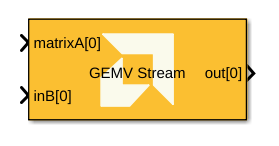

Stream-based General Matrix-Vector Multiplication targeted for AI Engines.

AI Engine/DSP/Stream IO
This block implements stream-based General Matrix-Vector Multiplication (GEMV), which performs the operation: output = A*B, where matrix A is (m x k) and vector B is (k x 1), producing an output vector of (m x 1). Matrix and vector data are transferred over stream interfaces, with support for configurable matrix and vector dimensions, multiple data types (int16, int32, cint16, cint32, float, cfloat), and flexible memory layouts (row-major or column-major). The matrix A can be provided either via input stream ports or through Run-Time Parameterization (RTP). Super Sample Rate (SSR) enables parallel processing across multiple data paths for improved throughput, while cascading support allows distribution of computation across multiple kernels.
Specifies the data type for the A input port. Supported types include int16, int32, cint16, cint32, float, and cfloat.
Specifies the data type for the B input port (vector). Supported types include int16, int32, cint16, cint32, float, and cfloat.
When checked, matrix A is provided via Run-Time Parameterization (RTP) instead of through an input port. This allows the matrix to be updated dynamically at runtime without restarting the kernel.
Specifies the number of rows (M dimension) in matrix A and the output vector.
Specifies the number of columns in matrix A and the length of vector B (K dimension). This is the reduction dimension in the GEMV operation.
Specifies the number of parallel data paths processed by the block. Increasing SSR allows for higher throughput by processing multiple samples in parallel.
When SSR > 1:
Specifies the number of cascaded kernel instances to be used. Cascading improves performance by distributing the computation across multiple kernels.
Specifies the memory layout for matrix A. Options include:
Describes the power of 2 by which the output is scaled down (right-shifted) before output. For float and cfloat data types, this parameter must be zero.
Describes the selection of rounding to be applied during the shift down stage of processing.
The following modes are available:
No rounding is performed on the Floor or Ceiling modes. Other modes round to the nearest integer. They differ only in how they round for values that are exactly between two integers.
Describes the selection of saturation to be applied during the shift down stage of processing.
The following modes are available:
-2^(n-1) to 2^(n-1)-1.-2^(n-1)-1 to 2^(n-1)-1.Click on the button given here to access the constraint manager and add or update constraints for each kernel. You can use the constraint manager to optimize the performance of your design by setting specific constraints for each kernel (in this case, you need to first run your design). Adding constraints will not affect the functional simulation in Simulink. Constraints will only affect the generated graph code, cycle approximate AIE simulation (System C), and behavior in hardware.
Click on the links below to open each model.
Copyright (C) 2026 Advanced Micro Devices, Inc.
All rights reserved.
SPDX-License-Identifier: MIT